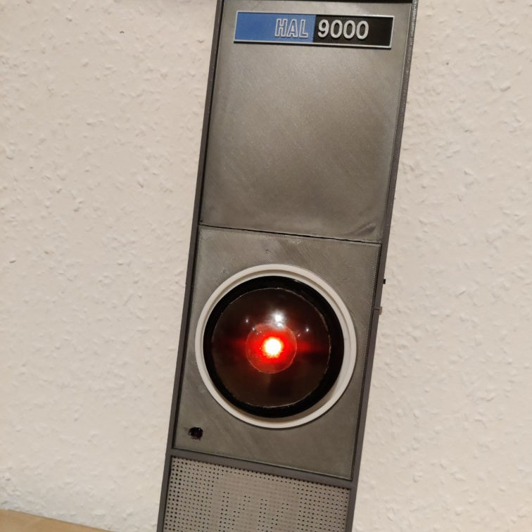
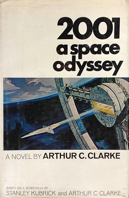

HAIML-9000
Machine Learning Group, Computer Science Department, TU Darmstadt.
Hochschulstrasse 1, Room S1|03 075, 64289 Darmstadt, Germany

This clip is up to about 24MB in size. Playing it will cause this file in its entirety to be downloaded.

The HAIML-9000 is a 3D printed replica of HAL-9000,
the AI of Stanley Kubrick's movie 2001: A Space Odyssey,
made for the AIML Lab.
It's equipped with a motion sensor that triggers the famous catch-phrase:
"I am sorry, I am affraid I can't do that.", said by HAL to Dave in the movie. HAIML-9000 inspires the lab members to align their research with ethical concerns, and will hopefully allow us to develop AI that rather answer:
"Of course Dave, what else can I do for you ?".
If you want to know how this part was designed, built and programmed, please visit this page.
Publications
Loading publications…